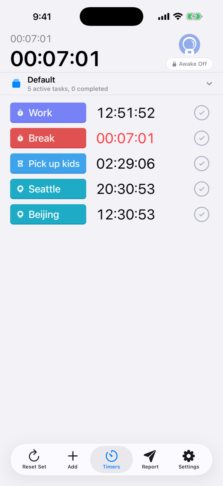
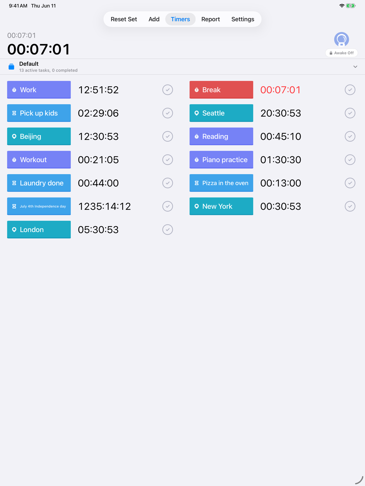
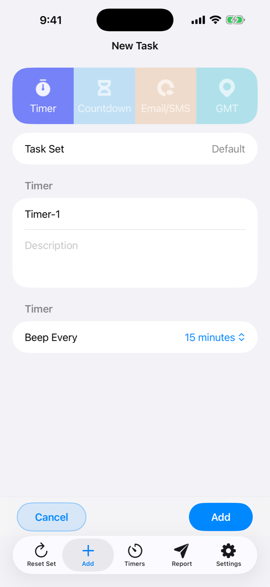
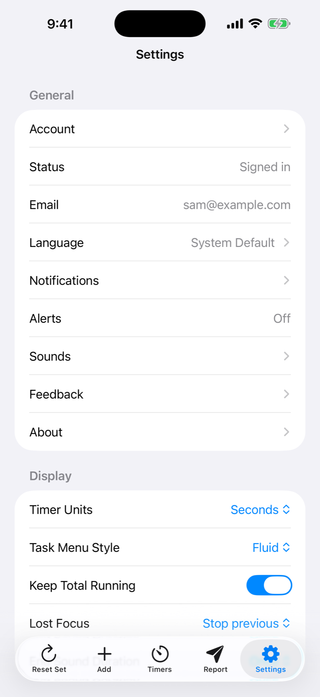
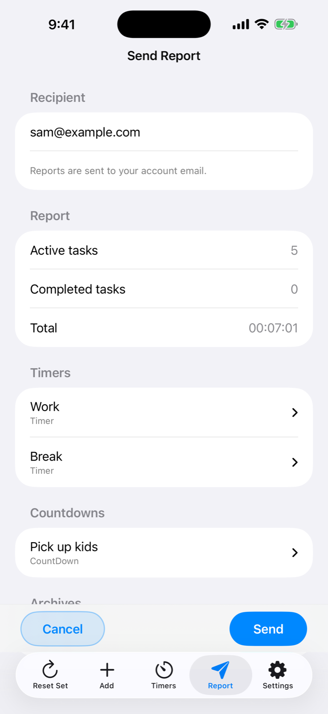

柔軟なタスクタイプ
タイマー、終了時刻カウントダウン、世界時計、アカウント通知タスク。
Mac、iPhone、iPad で使えるタイマー、カウントダウン、時計、レポート、サウンド、アカウント通知。



タイマー、終了時刻カウントダウン、世界時計、アカウント通知タスク。
仕事、料理、学習、旅行、再利用できるルーティンを分けて管理。
スナップショットを確認し、メモを追加して、アカウントのメールへ送信。
内蔵サウンド、カスタムサウンド、ビープ音、ローカル通知を使用。
SwiftUI タイマー。タスクセット、レポート、同期、カスタムサウンド、メニューバー状態に対応。





iPhone と iPad でタイマー、時計、レポート、設定、同期、通知、サウンドを利用。
タイマーデータをアカウントに保存し、登録済みの連絡先だけに更新を送信。